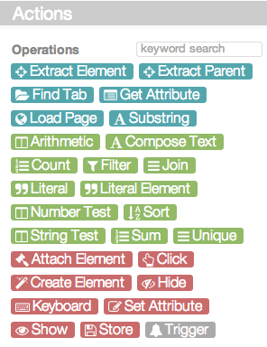
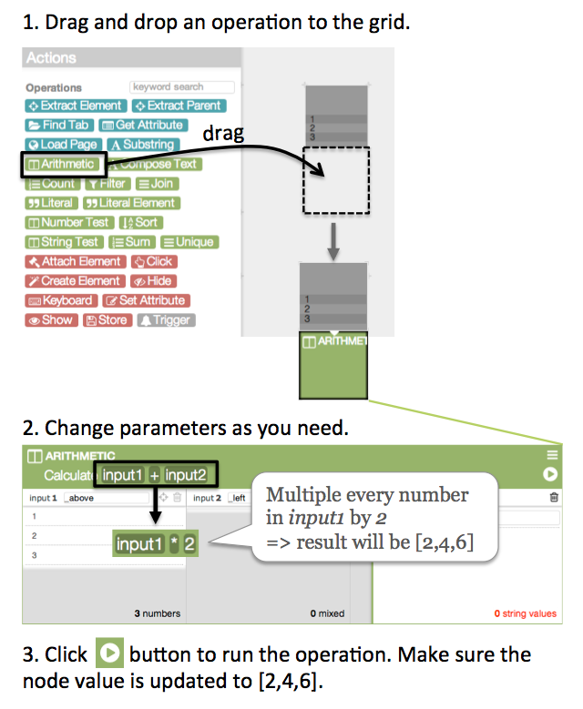
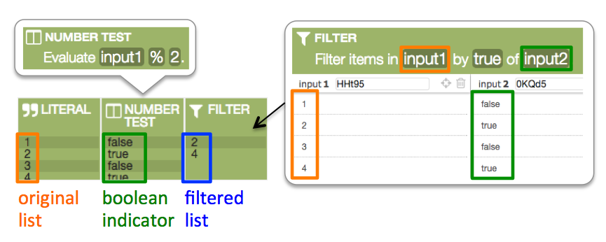
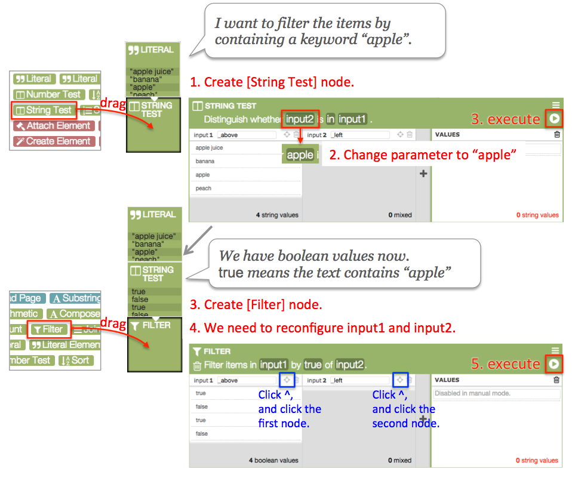

Tutorial
Introduction
Welcome to VESPY! VESPY is a programming environment on the Web. It enables you to modify or add extra functionality to existing web pages. Here are some examples that enhancements can do:
- Hide unwanted information such as advertisements.
- Collect information from multiple web pages, and create custom reports.
- Add custom filters to any list.
- Convert plain data tables into interactive calculators.
Basic Concepts & UI components
Let's begin with the terminology of VESPY programming.- An Enhancement is an application created using VESPY. An enhancement consists of many nodes. The nodes are connected to each other, executed one-by-one, and passing values around.
- Nodes are placed on the grid UI. Each node contains an operation, a list of values, and is connected to one or multiple input nodes.
- Operation is what this node will do when being triggered. For example, the operation above multiplies the numbers of input 1 and input 2, and updates the node's value. Parameters such as input 1, /, input 2 can be directly modified. You can drag new operations from the Actions panel.
- Input nodes connect the node to other preceding nodes. It can be either relative position (e.g. _left, _right, _above, _below) or node ID (e.g. wOkhj), which you can set by pressing and clicking the input node.
- Values can be set by either
- executing the operation,
- typing in the text box,
- or extracting elements from the current Web page.
- The Actions panel shows the operations that you can create nodes with.
VESPY provides over 30 operations. In the tools panel, you can drag them to the grid. Four colors of the operations represent different roles they have.
- Pick operations select / find / load information from the Web.
- Transform operations do value-to-value conversion.
- Apply operations customize existing Web pages by hiding / changing / attaching new elements.
- Control operations manage program structure such as event handling.
Option 1. Drag an operation from the actions panel.
 Option 2. Double-click an empty part of the grid to create an empty node. As the node does not have any operation or values, you should choose an action in the actions panel.
Option 2. Double-click an empty part of the grid to create an empty node. As the node does not have any operation or values, you should choose an action in the actions panel. Connecting Nodes
Connections among nodes not just pass the data but also trigger the following nodes. For instance, in the figure below, the order of executing the nodes is represented with red lines.- (0) triggers (1) to set the original numbers.
- (2) and (3) are executed to get the count and the sum.
- After all, (4) calculates the average using values from (2) and (3).
 Three rules about executing nodes are important.
Three rules about executing nodes are important.
- All the nodes to run must be connected to the main Trigger node.
- A node awaits until all its preceding nodes are executed.
- Trigger nodes awaits until specific event has occured.
Element Inspector
Most Tandem enhancements need to deal with existing elements (e.g. tables, lists, and images) on the Web. Watch the following video first.The steps are
- Select an empty node.
- Click any page element that you want to extract. Element Inspector panel will show up. The top line ("BODY> DIV> DIV> DIV> DIV") shows HTML tags of the elements enclosing the current selection. You can hover over them and click one to switch selection.
- Click [Extract] button to extract the element and add to the current node values.
- If you want to extract more than one elements, extract couple more elements.
- Check the Actions panel. Click [Extract Element] task looks like below.

Try In the practice window, extract all the rows of the table. How did you extract rows instead of columns?
Two methods
Manual
VESPY also allows traditional programming style. Users can directly choose the operation that they need, and manually set the parameters. Automatic
Imagine a situation that you know what to do but have no idea of how to do it. Instead of searching the documentation, VESPY's generator allows you to express your intent with node values and demonstration. It is like saying
I have a fresh egg, butter, and coconut [input values].Let's learn how to get suggested actions in VESPY.
How can I bake delicious macaroons [desired outcome] with them?
Using a single input node
Using multiple input nodes
Some actions require multiple input nodes (e.g. egg and butter). It takes several steps as below.Using demonstration
Sometimes What you want to do can be easily expressed by demonstration.Attaching elements to the page
For example, to attach some elements to the current web page, you can drag-and-drop the elements to the target positions.Tasks
You have learned the very basic usage and two methods for creating operations in VESPY. Let's learn five types of common tasks.We prepared several problems for each task type. First, you will try to solve them without any instruction. After the first trial, we will be given some instruction and examples. Then you will try the task again.
1.Calculating Numbers
Manual
All the calculations in the task can be done with single operations (e.g. Arithmetic, Sort, and Count).
- Drag an appropriate operation to below or right to the input nodes.
- Modify the parameters as shown in the following examples.
Automatic
- Create an empty node below or right to the input node.
- Type node values that you want to get.
- Confirm a correct action in the action panel.
Examples
Make sure you understand both methods. Which method was easier and more efficient for the tasks? Answer questions in the following survey.
2.Extracting Information
Manual
Web elements contain many kinds of attributes. For example, a hyperlink element may contain text, download, visibility, color, background-color, link, and more. To maually extract attributes from elements, follow the steps below.- Drag [Get Attribute] operation from the action panel to the below of the input node.
- Change the parameter to the attribute key that you want to extract.
Automatic
Same as calculation tasks, you can provide desired values and get suggestions. Providing values is even easier with the click-to-copy functionality.- Create an empty node below the input node containing some elements (e.g. IMG tag in the figure below). You can see some elements in the node detail UI.
- If you want to get 'source' attribute, put mouse cursor over the source attribute and press button. It will add the attribute value to the current node value.
- Then the tools panel would suggest an action of [Get Attribute]. Click to confirm the action.
- Now the second node has the operation for getting 'color' attributes from input1.
If you need to get attributes from sub-elements within the input, you can simply provide examples of the attribute as illustrated below.
What if you want to find other elements next to the input elements? You can simply provide examples of the target elements as illustrated below. Try task using the automatic method explained above.
Make sure you understand both methods. Which method was easier and more efficient for the tasks? Answer questions in the following survey.
3.Filtering items
Manual
In order to filter items by arbitrary logic, you use [Filter] operation. [Filter] operation needs two inputs, 1) original list of items, 2) boolean values that indicate whether corresponding items will stay in the filtered list.  Let's filter a text list by whether they contain "apple".  Filtering numbers is the same except you use [Number Test] instead of [String Test].Try task using the manual method explained above.
Automatic
Same as the other tasks, you can provide a desired outcome (filtered items) to get a complete filtering action. Try task using the automatic method explained above.Make sure you understand both methods. Which method was easier and more efficient for the tasks? Answer questions in the following survey.
4.Attaching Elements
Manual
In order to attach items to current page, you use [Attach Element] operation. [Attach Element] operation needs two inputs, 1) Elements to attach, 2) target elements. Try task using the manual method explained above.Automatic
Unlike the other tasks, attaching elements can be demonstrated instead of giving example values. For example, in order to attach some elements to the current web page, you can drag-and-drop the elements to the target position as shown below. Try task using the automatic method explained above.Make sure you understand both methods. Which method was easier and more efficient for the tasks? Answer questions in the following survey.
Closing Survey
How easy or difficult was it to learn each method?
| Very easy | Very difficult | ||||||
| Automatic | |||||||
| Manual | |||||||